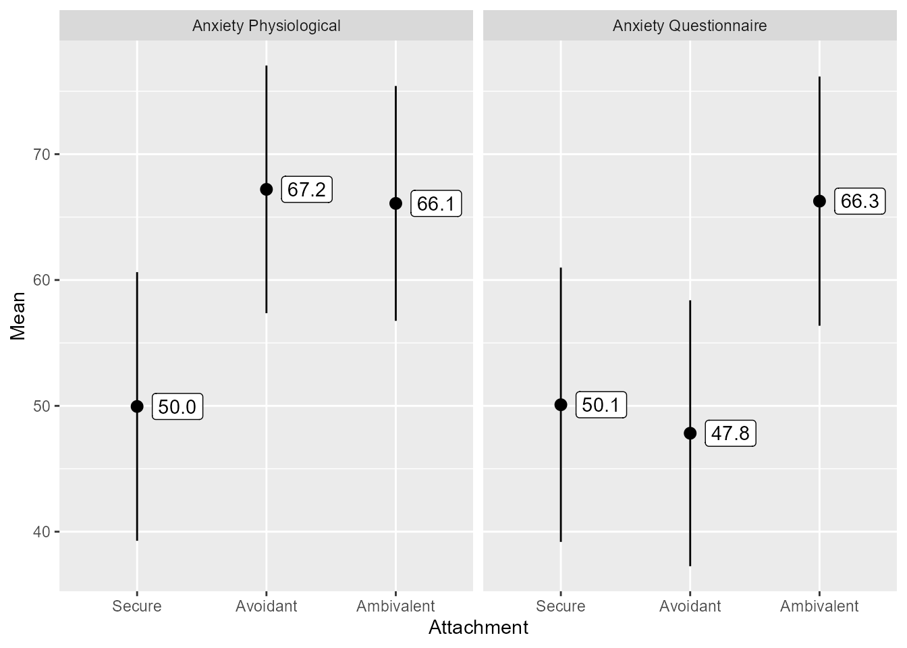

library(tidyverse)
library(easystats)Load Packages
Import Data and Create Labelled Factors
The haven package will import data as a “tibble.” A tibble is a container for tabular data. It is an enhancement of the base R’s data.frame.
Hadley Wickham, the programmer who started the tidyverse, enjoys naming things precisely but with a touch of humor. “Tibble” is what people in the U.S. sometimes hear when New Zealanders like Hadley say the word “table.”
# File location
file <- "https://github.com/wjschne/EDUC5325/raw/master/Attachment.sav"
# Import SPSS data file using haven
# Also, change the Attachment variable to a factor
d <- haven::read_spss(file) %>%
mutate(Attachment = as_factor(Attachment))Descriptives
The variables in d are:
Attachment: Classifies each person’s attachment type: Secure, Avoidant, or AmbivalentAnxiety_Questionnaire: A summary score from a questionnaire measure of anxietyAnxiety_Physiological: A summary score from various physiological measures of anxiety
There are 300 rows (cases) and 3 columns (variables).
Let’s get a sense of what is in the data frame.
We can look at the first 6 rows of the data using the head function:
head(d)# A tibble: 6 × 3
Attachment Anxiety_Physiological Anxiety_Questionnaire
<fct> <dbl> <dbl>
1 Secure 59.8 57.9
2 Ambivalent 63.3 63.4
3 Avoidant 72.2 51.5
4 Secure 41.6 38.6
5 Ambivalent 77.8 82.5
6 Ambivalent 51.6 50.8A nice summary of what the variables are:
data_codebook(d)d (300 rows and 3 variables, 3 shown)
ID | Name | Type | Missings | Values | N
---+-----------------------+-------------+----------+----------------+------------
1 | Attachment | categorical | 0 (0.0%) | Secure | 110 (36.7%)
| | | | Avoidant | 85 (28.3%)
| | | | Ambivalent | 105 (35.0%)
---+-----------------------+-------------+----------+----------------+------------
2 | Anxiety_Physiological | numeric | 0 (0.0%) | [22.78, 93.88] | 300
---+-----------------------+-------------+----------+----------------+------------
3 | Anxiety_Questionnaire | numeric | 0 (0.0%) | [21.79, 92.38] | 300
----------------------------------------------------------------------------------Selecting specific variables
Data sets in tutorials like this one are often unrealistically small. If there are only three variables, we are happy to describe all the variables in a single table.
Real data sets can have dozens, hundreds, or even thousands of variables. Describing hundreds of variables in a single table is usually impractical. We need a way to select from the data just the variables we want.
There are many ways to select variables in R, but I am going to keep things simple and consistent. I will use the select function from the tidyverse any time I select a variable. The select function is rarely used by itself. We use it as a preliminary step before doing something else (i.e., to specify which variables to describe, analyze, or plot). For this reason, it is often used in the middle sequence of commands linked with the “pipe” operator: %>%
d %>%
select(Anxiety_Questionnaire, Anxiety_Physiological) %>%
cor() Anxiety_Questionnaire Anxiety_Physiological
Anxiety_Questionnaire 1.00 0.75
Anxiety_Physiological 0.75 1.00The pipe operator inserts the output of the previous command into the next function. You can think of it as meaning “and then…”
The code above can be interpreted as a series of steps: 1. Start with the data in dAND THEN 2. Select the variables Anxiety_Questionnaire and Anxiety_Physiological AND THEN 3. Create a correlation matrix.
It makes it convenient to link a series of commands in a readable format.
You can select as many variables as you wish, separated by commas. You do not need to put variable names in quotes.
The select function allows for selecting as many variables from the data as you wish:
d %>%
select(Attachment, Anxiety_Physiological)# A tibble: 300 × 2
Attachment Anxiety_Physiological
<fct> <dbl>
1 Secure 59.8
2 Ambivalent 63.3
3 Avoidant 72.2
4 Secure 41.6
5 Ambivalent 77.8
6 Ambivalent 51.6
7 Secure 57.7
8 Ambivalent 69.6
9 Avoidant 67.7
10 Avoidant 71.7
# ℹ 290 more rowsUse the - sign to exclude a variable:
d %>%
select(-Attachment)# A tibble: 300 × 2
Anxiety_Physiological Anxiety_Questionnaire
<dbl> <dbl>
1 59.8 57.9
2 63.3 63.4
3 72.2 51.5
4 41.6 38.6
5 77.8 82.5
6 51.6 50.8
7 57.7 56.1
8 69.6 75.9
9 67.7 49.7
10 71.7 52.3
# ℹ 290 more rowsSelect variables that contain “Anxiety”
d %>%
select(contains("Anxiety"))# A tibble: 300 × 2
Anxiety_Physiological Anxiety_Questionnaire
<dbl> <dbl>
1 59.8 57.9
2 63.3 63.4
3 72.2 51.5
4 41.6 38.6
5 77.8 82.5
6 51.6 50.8
7 57.7 56.1
8 69.6 75.9
9 67.7 49.7
10 71.7 52.3
# ℹ 290 more rows
Alternative Selection Methods
R’s delightful flexibility makes for a bewildering array of options! Here just a few of the many ways we could select the Attachment variable from data.frame d:
# By name
d[, "Attachment"] # A tibble: 300 × 1
Attachment
<fct>
1 Secure
2 Ambivalent
3 Avoidant
4 Secure
5 Ambivalent
6 Ambivalent
7 Secure
8 Ambivalent
9 Avoidant
10 Avoidant
# ℹ 290 more rows# By position
d[, 1] # A tibble: 300 × 1
Attachment
<fct>
1 Secure
2 Ambivalent
3 Avoidant
4 Secure
5 Ambivalent
6 Ambivalent
7 Secure
8 Ambivalent
9 Avoidant
10 Avoidant
# ℹ 290 more rows# Selecting always returns a data.frame or tibble
select(d, Attachment)# A tibble: 300 × 1
Attachment
<fct>
1 Secure
2 Ambivalent
3 Avoidant
4 Secure
5 Ambivalent
6 Ambivalent
7 Secure
8 Ambivalent
9 Avoidant
10 Avoidant
# ℹ 290 more rows# Extracting a vector from the data
d$Attachment [1] Secure Ambivalent Avoidant Secure Ambivalent Ambivalent
[7] Secure Ambivalent Avoidant Avoidant Avoidant Secure
[13] Ambivalent Secure Avoidant Ambivalent Ambivalent Secure
[19] Avoidant Secure Avoidant Avoidant Ambivalent Secure
[25] Avoidant Avoidant Secure Avoidant Ambivalent Secure
[31] Secure Secure Ambivalent Ambivalent Avoidant Avoidant
[37] Ambivalent Secure Ambivalent Secure Ambivalent Secure
[43] Secure Secure Ambivalent Ambivalent Ambivalent Avoidant
[49] Avoidant Ambivalent Secure Secure Ambivalent Ambivalent
[55] Secure Ambivalent Ambivalent Ambivalent Avoidant Ambivalent
[61] Ambivalent Ambivalent Avoidant Secure Ambivalent Avoidant
[67] Avoidant Avoidant Secure Secure Secure Secure
[73] Secure Secure Secure Ambivalent Secure Ambivalent
[79] Avoidant Avoidant Avoidant Ambivalent Secure Avoidant
[85] Secure Ambivalent Ambivalent Secure Ambivalent Avoidant
[91] Ambivalent Avoidant Avoidant Avoidant Avoidant Secure
[97] Avoidant Secure Secure Avoidant Secure Avoidant
[103] Ambivalent Ambivalent Secure Avoidant Ambivalent Avoidant
[109] Secure Secure Secure Ambivalent Avoidant Avoidant
[115] Ambivalent Ambivalent Ambivalent Secure Ambivalent Avoidant
[121] Secure Secure Ambivalent Ambivalent Secure Ambivalent
[127] Avoidant Secure Ambivalent Avoidant Secure Ambivalent
[133] Secure Ambivalent Secure Avoidant Avoidant Ambivalent
[139] Secure Avoidant Secure Secure Avoidant Secure
[145] Avoidant Ambivalent Ambivalent Secure Avoidant Secure
[151] Secure Avoidant Ambivalent Avoidant Ambivalent Secure
[157] Ambivalent Secure Secure Secure Ambivalent Ambivalent
[163] Secure Ambivalent Secure Avoidant Secure Ambivalent
[169] Secure Avoidant Ambivalent Secure Secure Ambivalent
[175] Avoidant Ambivalent Avoidant Secure Avoidant Avoidant
[181] Ambivalent Avoidant Ambivalent Ambivalent Secure Ambivalent
[187] Secure Ambivalent Secure Secure Secure Avoidant
[193] Ambivalent Secure Avoidant Secure Secure Secure
[199] Secure Secure Ambivalent Avoidant Avoidant Ambivalent
[205] Avoidant Ambivalent Secure Secure Secure Secure
[211] Ambivalent Avoidant Ambivalent Ambivalent Ambivalent Secure
[217] Avoidant Secure Avoidant Secure Secure Ambivalent
[223] Avoidant Avoidant Ambivalent Ambivalent Ambivalent Avoidant
[229] Ambivalent Ambivalent Ambivalent Avoidant Ambivalent Avoidant
[235] Ambivalent Secure Avoidant Secure Secure Avoidant
[241] Ambivalent Secure Avoidant Ambivalent Ambivalent Ambivalent
[247] Avoidant Avoidant Secure Avoidant Ambivalent Secure
[253] Secure Secure Ambivalent Secure Secure Secure
[259] Secure Avoidant Ambivalent Secure Avoidant Avoidant
[265] Ambivalent Ambivalent Secure Ambivalent Ambivalent Avoidant
[271] Ambivalent Ambivalent Ambivalent Secure Ambivalent Avoidant
[277] Ambivalent Secure Secure Secure Secure Ambivalent
[283] Avoidant Ambivalent Secure Ambivalent Avoidant Avoidant
[289] Ambivalent Avoidant Secure Secure Ambivalent Avoidant
[295] Ambivalent Avoidant Secure Secure Secure Avoidant
Levels: Secure Avoidant Ambivalent# Pulling a vector frome the data (a pipe-friendly version of `$`)
d %>%
pull(Attachment) [1] Secure Ambivalent Avoidant Secure Ambivalent Ambivalent
[7] Secure Ambivalent Avoidant Avoidant Avoidant Secure
[13] Ambivalent Secure Avoidant Ambivalent Ambivalent Secure
[19] Avoidant Secure Avoidant Avoidant Ambivalent Secure
[25] Avoidant Avoidant Secure Avoidant Ambivalent Secure
[31] Secure Secure Ambivalent Ambivalent Avoidant Avoidant
[37] Ambivalent Secure Ambivalent Secure Ambivalent Secure
[43] Secure Secure Ambivalent Ambivalent Ambivalent Avoidant
[49] Avoidant Ambivalent Secure Secure Ambivalent Ambivalent
[55] Secure Ambivalent Ambivalent Ambivalent Avoidant Ambivalent
[61] Ambivalent Ambivalent Avoidant Secure Ambivalent Avoidant
[67] Avoidant Avoidant Secure Secure Secure Secure
[73] Secure Secure Secure Ambivalent Secure Ambivalent
[79] Avoidant Avoidant Avoidant Ambivalent Secure Avoidant
[85] Secure Ambivalent Ambivalent Secure Ambivalent Avoidant
[91] Ambivalent Avoidant Avoidant Avoidant Avoidant Secure
[97] Avoidant Secure Secure Avoidant Secure Avoidant
[103] Ambivalent Ambivalent Secure Avoidant Ambivalent Avoidant
[109] Secure Secure Secure Ambivalent Avoidant Avoidant
[115] Ambivalent Ambivalent Ambivalent Secure Ambivalent Avoidant
[121] Secure Secure Ambivalent Ambivalent Secure Ambivalent
[127] Avoidant Secure Ambivalent Avoidant Secure Ambivalent
[133] Secure Ambivalent Secure Avoidant Avoidant Ambivalent
[139] Secure Avoidant Secure Secure Avoidant Secure
[145] Avoidant Ambivalent Ambivalent Secure Avoidant Secure
[151] Secure Avoidant Ambivalent Avoidant Ambivalent Secure
[157] Ambivalent Secure Secure Secure Ambivalent Ambivalent
[163] Secure Ambivalent Secure Avoidant Secure Ambivalent
[169] Secure Avoidant Ambivalent Secure Secure Ambivalent
[175] Avoidant Ambivalent Avoidant Secure Avoidant Avoidant
[181] Ambivalent Avoidant Ambivalent Ambivalent Secure Ambivalent
[187] Secure Ambivalent Secure Secure Secure Avoidant
[193] Ambivalent Secure Avoidant Secure Secure Secure
[199] Secure Secure Ambivalent Avoidant Avoidant Ambivalent
[205] Avoidant Ambivalent Secure Secure Secure Secure
[211] Ambivalent Avoidant Ambivalent Ambivalent Ambivalent Secure
[217] Avoidant Secure Avoidant Secure Secure Ambivalent
[223] Avoidant Avoidant Ambivalent Ambivalent Ambivalent Avoidant
[229] Ambivalent Ambivalent Ambivalent Avoidant Ambivalent Avoidant
[235] Ambivalent Secure Avoidant Secure Secure Avoidant
[241] Ambivalent Secure Avoidant Ambivalent Ambivalent Ambivalent
[247] Avoidant Avoidant Secure Avoidant Ambivalent Secure
[253] Secure Secure Ambivalent Secure Secure Secure
[259] Secure Avoidant Ambivalent Secure Avoidant Avoidant
[265] Ambivalent Ambivalent Secure Ambivalent Ambivalent Avoidant
[271] Ambivalent Ambivalent Ambivalent Secure Ambivalent Avoidant
[277] Ambivalent Secure Secure Secure Secure Ambivalent
[283] Avoidant Ambivalent Secure Ambivalent Avoidant Avoidant
[289] Ambivalent Avoidant Secure Secure Ambivalent Avoidant
[295] Ambivalent Avoidant Secure Secure Secure Avoidant
Levels: Secure Avoidant AmbivalentIn this case, there is no strong reason to prefer one method over the other. As you gain experience with R, you might find reasons to use different methods of selection. For now, we will stick to select
Basic descriptives
Numeric variables can be described in terms of means, standard deviations (SD), interquartile ranges (IQR), skewness, and kurtosis:
describe_distribution(d)Variable | Mean | SD | IQR | Range | Skewness
-------------------------------------------------------------------------
Anxiety_Physiological | 60.49 | 12.79 | 16.43 | [22.78, 93.88] | -0.29
Anxiety_Questionnaire | 55.11 | 13.30 | 18.24 | [21.79, 92.38] | 0.05
Variable | Kurtosis | n | n_Missing
--------------------------------------------------
Anxiety_Physiological | 0.24 | 300 | 0
Anxiety_Questionnaire | -0.16 | 300 | 0Categorical variables are often described in terms of frequencies tables.
d %>%
select(Attachment) %>%
data_tabulate()Attachment (Attachment) <categorical>
# total N=300 valid N=300
Value | N | Raw % | Valid % | Cumulative %
-----------+-----+-------+---------+-------------
Secure | 110 | 36.67 | 36.67 | 36.67
Avoidant | 85 | 28.33 | 28.33 | 65.00
Ambivalent | 105 | 35.00 | 35.00 | 100.00
<NA> | 0 | 0.00 | <NA> | <NA>We can get descriptives statistics of our numeric variables separated by group. There are many ways to do this, but the simplest is the describeBy function from the psych package
psych::describeBy(d, group = "Attachment")
Descriptive statistics by group
Attachment: 1
vars n mean sd median trimmed mad min max range skew
Attachment 1 110 1 0 1 1 0 1 1 0 NaN
Anxiety_Physiological 2 110 50 11 51 51 12 23 70 48 -0.44
Anxiety_Questionnaire 3 110 50 11 51 51 12 23 70 46 -0.36
kurtosis se
Attachment NaN 0
Anxiety_Physiological -0.41 1
Anxiety_Questionnaire -0.61 1
------------------------------------------------------------
Attachment: 2
vars n mean sd median trimmed mad min max range skew
Attachment 1 85 2 0.0 2 2 0.0 2 2 0 NaN
Anxiety_Physiological 2 85 67 9.8 67 67 9.5 46 94 48 0.27
Anxiety_Questionnaire 3 85 48 10.6 48 48 9.9 22 74 52 0.11
kurtosis se
Attachment NaN 0.0
Anxiety_Physiological -0.13 1.1
Anxiety_Questionnaire -0.10 1.1
------------------------------------------------------------
Attachment: 3
vars n mean sd median trimmed mad min max range skew
Attachment 1 105 3 0.0 3 3 0.0 3 3 0 NaN
Anxiety_Physiological 2 105 66 9.3 65 66 7.8 45 94 48 0.19
Anxiety_Questionnaire 3 105 66 9.9 66 66 9.3 44 92 48 0.31
kurtosis se
Attachment NaN 0.00
Anxiety_Physiological 0.08 0.91
Anxiety_Questionnaire -0.10 0.97The datawizard package has some really nice functions for descriptives:
d %>%
datawizard::means_by_group(
select = contains("Anxiety") ,
by = "Attachment")# Mean of Anxiety_Physiological by Attachment
Category | Mean | N | SD | 95% CI | p
----------------------------------------------------------
Secure | 49.95 | 110 | 10.67 | [48.08, 51.83] | < .001
Avoidant | 67.20 | 85 | 9.84 | [65.07, 69.33] | < .001
Ambivalent | 66.09 | 105 | 9.33 | [64.17, 68.00] | < .001
Total | 60.49 | 300 | 12.79 | |
Anova: R2=0.395; adj.R2=0.391; F=96.988; p<.001
# Mean of Anxiety_Questionnaire by Attachment
Category | Mean | N | SD | 95% CI | p
----------------------------------------------------------
Secure | 50.09 | 110 | 10.90 | [48.13, 52.05] | < .001
Avoidant | 47.82 | 85 | 10.57 | [45.59, 50.06] | < .001
Ambivalent | 66.27 | 105 | 9.90 | [64.26, 68.28] | < .001
Total | 55.11 | 300 | 13.30 | |
Anova: R2=0.385; adj.R2=0.381; F=92.975; p<.001The skimr package is also quite nice:
library(skimr)
# Overall summary
d %>%
skim()| Name | Piped data |
| Number of rows | 300 |
| Number of columns | 3 |
| _______________________ | |
| Column type frequency: | |
| factor | 1 |
| numeric | 2 |
| ________________________ | |
| Group variables | None |
Variable type: factor
| skim_variable | n_missing | complete_rate | ordered | n_unique | top_counts |
|---|---|---|---|---|---|
| Attachment | 0 | 1 | FALSE | 3 | Sec: 110, Amb: 105, Avo: 85 |
Variable type: numeric
| skim_variable | n_missing | complete_rate | mean | sd | p0 | p25 | p50 | p75 | p100 | hist |
|---|---|---|---|---|---|---|---|---|---|---|
| Anxiety_Physiological | 0 | 1 | 60 | 13 | 23 | 53 | 61 | 69 | 94 | ▁▃▇▅▁ |
| Anxiety_Questionnaire | 0 | 1 | 55 | 13 | 22 | 46 | 55 | 64 | 92 | ▂▆▇▅▁ |
# Grouped summaries
d %>%
group_by(Attachment) %>%
skim()| Name | Piped data |
| Number of rows | 300 |
| Number of columns | 3 |
| _______________________ | |
| Column type frequency: | |
| numeric | 2 |
| ________________________ | |
| Group variables | Attachment |
Variable type: numeric
| skim_variable | Attachment | n_missing | complete_rate | mean | sd | p0 | p25 | p50 | p75 | p100 | hist |
|---|---|---|---|---|---|---|---|---|---|---|---|
| Anxiety_Physiological | Secure | 0 | 1 | 50 | 10.7 | 23 | 43 | 51 | 58 | 70 | ▂▅▆▇▃ |
| Anxiety_Physiological | Avoidant | 0 | 1 | 67 | 9.8 | 46 | 61 | 67 | 73 | 94 | ▂▇▇▅▁ |
| Anxiety_Physiological | Ambivalent | 0 | 1 | 66 | 9.3 | 45 | 61 | 65 | 72 | 94 | ▃▆▇▃▁ |
| Anxiety_Questionnaire | Secure | 0 | 1 | 50 | 10.9 | 23 | 42 | 51 | 59 | 70 | ▂▅▇▇▆ |
| Anxiety_Questionnaire | Avoidant | 0 | 1 | 48 | 10.6 | 22 | 41 | 48 | 54 | 74 | ▁▅▇▃▂ |
| Anxiety_Questionnaire | Ambivalent | 0 | 1 | 66 | 9.9 | 44 | 60 | 66 | 72 | 92 | ▂▆▇▃▂ |
These are convenience functions. If they do exactly what you want, great! However, I often need statistics in a data frame in a format optimal for further processing (e.g., for publication-worthy tables or plots).
d_descriptives <- d %>%
pivot_longer(contains("Anxiety"),
names_to = "Measure") %>%
summarise(Mean = mean(value),
SD = sd(value),
n = n(),
.by = c(Attachment, Measure)) %>%
mutate(Measure = snakecase::to_title_case(Measure))
d_descriptives# A tibble: 6 × 5
Attachment Measure Mean SD n
<fct> <chr> <dbl> <dbl> <int>
1 Secure Anxiety Physiological 50.0 10.7 110
2 Secure Anxiety Questionnaire 50.1 10.9 110
3 Ambivalent Anxiety Physiological 66.1 9.33 105
4 Ambivalent Anxiety Questionnaire 66.3 9.90 105
5 Avoidant Anxiety Physiological 67.2 9.84 85
6 Avoidant Anxiety Questionnaire 47.8 10.6 85This output is not pretty, but it was not intended to be. It is in a format that is easy to adapt for other things. For example, I can use the gt (“Great Tables”) package to get exactly what I want to display:
Code
library(gt)
d_descriptives %>%
gt(groupname_col = "Measure",
rowname_col = "Attachment") %>%
tab_stub_indent(everything(), indent = 5)| Mean | SD | n | |
|---|---|---|---|
| Anxiety Physiological | |||
| Secure | 50 | 10.7 | 110 |
| Ambivalent | 66 | 9.3 | 105 |
| Avoidant | 67 | 9.8 | 85 |
| Anxiety Questionnaire | |||
| Secure | 50 | 10.9 | 110 |
| Ambivalent | 66 | 9.9 | 105 |
| Avoidant | 48 | 10.6 | 85 |
Or I can use ggplot2 to display means and standard deviations graphically:
Code
d_descriptives %>%
mutate(mean_label = scales::number(Mean, .1)) %>%
ggplot(aes(Attachment, Mean)) +
facet_grid(cols = vars(Measure)) +
geom_pointrange(aes(ymin = Mean - SD,
ymax = Mean + SD)) +
geom_label(
aes(label = mean_label),
hjust = -.3)
Plot
d |>
ggplot(aes(x = Attachment,
y = Anxiety_Questionnaire)) +
geom_violin() +
stat_summary() Just looking at the plot, we can see that the Ambivalent group has a higher mean anxiety than the other two groups. However, let’s conduct a formal test of the difference of the group means.
Create One-Way ANOVA
The aov (Analysis of Variance) function is what you want to use. The anova function is better used for comparing models. The dependent variable goes on the left, and any predictor variables are on the right hand side of the ~.
fit <- aov(Anxiety_Questionnaire ~ Attachment, data = d)Diagnostic Plots
check_model(fit)
None of the diagnostic checks raise any alarms. Specifically, the residuals are reasonably normal and have consistent variance acrross groups (i.e., the homogeneeity of variance assumption is reasonable).
Summary
The base R function summary gives us most of what we might want to know.
summary(fit) Df Sum Sq Mean Sq F value Pr(>F)
Attachment 2 20359 10179 93 <2e-16 ***
Residuals 297 32517 109
---
Signif. codes: 0 '***' 0.001 '**' 0.01 '*' 0.05 '.' 0.1 ' ' 1We can see that overall model is significant, meaning that at least two groups have reliably different means. At this point we do not know which means differ, but from the plot we have a good guess that the Ambivalent group scores higher on the Anxiety Questionnaire than the other two groups.
A similar, but tidier display can be found with the parameters function:
parameters(fit)Parameter | Sum_Squares | df | Mean_Square | F | p
-------------------------------------------------------------
Attachment | 20358.60 | 2 | 10179.30 | 92.98 | < .001
Residuals | 32516.83 | 297 | 109.48 | |
Anova Table (Type 1 tests)Other Summary Functions
The overall “fit” or “performance” of the model:
performance(fit)# Indices of model performance
AIC | AICc | BIC | R2 | R2 (adj.) | RMSE | Sigma
--------------------------------------------------------------------
2265.082 | 2265.218 | 2279.897 | 0.385 | 0.381 | 10.411 | 10.463AIC: Akaike’s Information CriterionAICc: AIC with a correction for small sample sizesBIC: Bayesian Information CriterionR2: R-squared: Coefficient of DeterminationR2_adj: Adjusted r-squaredRMSE: Root mean squared error =\sqrt{\frac{\sum_{i = 1}^{n}{e_i}}{n}}SIGMA: Residual standard deviation (The SD of the residuals =\sqrt{\frac{\sum_{i = 1}^{n}{e_i}}{n-k-1}})
Automated Interpretation
report(fit)The ANOVA (formula: Anxiety_Questionnaire ~ Attachment) suggests that:
- The main effect of Attachment is statistically significant and large (F(2,
297) = 92.98, p < .001; Eta2 = 0.39, 95% CI [0.32, 1.00])
Effect sizes were labelled following Field's (2013) recommendations.Post-hoc Tests
We would like to compare all means but control for family-wise error.
fit_contrast <- estimate_contrasts(fit,
contrast = "Attachment",
backend = "emmeans")
fit_contrast Marginal Contrasts Analysis
Level1 | Level2 | Difference | 95% CI | SE | t(297) | p
------------------------------------------------------------------------------
Avoidant | Ambivalent | -18.44 | [-21.45, -15.44] | 1.53 | -12.08 | < .001
Secure | Ambivalent | -16.18 | [-18.99, -13.37] | 1.43 | -11.33 | < .001
Secure | Avoidant | 2.27 | [ -0.71, 5.24] | 1.51 | 1.50 | 0.135
Variable predicted: Anxiety_Questionnaire
Predictors contrasted: Attachment
p-values are uncorrected.report(fit_contrast)The marginal contrasts analysis suggests the following. The difference between
Avoidant and Ambivalent is negative and statistically significant (difference =
-18.44, 95% CI [-21.45, -15.44], t(297) = -12.08, p < .001). The difference
between Secure and Ambivalent is negative and statistically significant
(difference = -16.18, 95% CI [-18.99, -13.37], t(297) = -11.33, p < .001). The
difference between Secure and Avoidant is positive and statistically
non-significant (difference = 2.27, 95% CI [ -0.71, 5.24], t(297) = 1.50, p =
0.135)